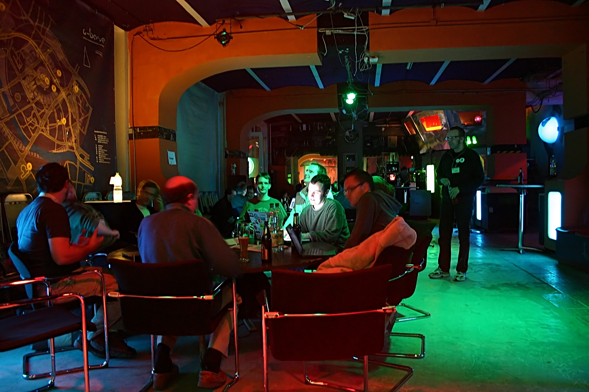

Schedule
09:00 - 09:50
09:50 - 10:00
Welcome Words
C-base
10:00 - 10:40
Opening Keynote
C-base
What can IT security professionals learn from safety literature?
When airplanes crash, mines explode, or dams are breached, extensive public investigations usually follow. The immense human suffering that has been caused by these accidents has lead to serious work put into understanding how and why these accidents happen (and happen, again). It turns out that most accidents are not as straightforward as we'd like to imagine them to be. Consequently, dealing with them in an effective way is also not straightforward: e.g. there is rarely, if ever, a single cause one could "just fix". Can we use the learnings from these domains to better deal with issues in IT security? In this talk I will try to point to a new, emerging paradigm of looking at IT security as a system that should aim to be Resilient/Observable, rather than Robust/Reliable, as put so neatly by Mario Platt, following the footsteps of "Safety Differently" by Sydney Dekker, itself based on the work of Diane Vaughan, Charles Perrow, Barry Turner, and others.
When airplanes crash, mines explode, or dams are breached, extensive public investigations usually follow. The immense human suffering that has been caused by these accidents has lead to serious work put into understanding how and why these accidents happen (and happen, again). It turns out that most accidents are not as straightforward as we'd like to imagine them to be. Consequently, dealing with them in an effective way is also not straightforward: e.g. there is rarely, if ever, a single cause one could "just fix". Can we use the learnings from these domains to better deal with issues in IT security? In this talk I will try to point to a new, emerging paradigm of looking at IT security as a system that should aim to be Resilient/Observable, rather than Robust/Reliable, as put so neatly by Mario Platt, following the footsteps of "Safety Differently" by Sydney Dekker, itself based on the work of Diane Vaughan, Charles Perrow, Barry Turner, and others.
17:10 - 18:00
Networking
Tickets
Regular
Regular - €17.17
Review committee
Venue
C-base Berlin
C-base is the oldest crashed space station on earth...
Address: Rungestraße 20, 10179 Berlin, Germany
Website: www.c-base.org

Sponsors & Partners
Sourya Biswas
I'm a Principal Security Consultant in the Risk Management & Governance (RM&G) practice at NCC Group, a security consulting firm headquartered and listed in the UK with a major and growing US subsidiary. I have 16+ years of experience in Information Risk and Security, and hold an undergrad degree in Information Technology from IIIT Calcutta and an MBA from the University of Notre Dame. I have several articles on cloud computing available online and served as technical editor for an authoritative textbook on the subject. I'm a certified CISSP, CCSP, CISA, CISM, CRISC, CGEIT, PMP and also have several ITIL Intermediate certifications. I have had the privilege of speaking at BSidesSF, BSidesCT, BSidesOK, ISACA Conference, Secure360 and InfoSec World among others. That's all about my second job. My first job is being a father to two adorable and naughty munchkins, 4 and 3 years old.
Anna-Katharina Wickert
Anna-Katharina Wickert loves to share things she is thrilled about. In her day-to-day job, she’s a Ph.D. student at Technische Universität Darmstadt. There she inspects (crypto) misuses in Java and recently looked into the security issues caused by the usage of the unsafe package in Go. In her free time, she organises the Frankfurt Rhein-Main chapter of the Go user group, loves healthy food especially vegetables, enjoys the time on her yoga mat, solving problems at the boulder gym, and spending time with her heart people.
Aditya K Sood
Aditya K Sood (Ph.D.) is a cybersecurity advisor, practitioner, researcher, and consultant. With the experience of more than 14 years, he provides strategic leadership in the field of information security covering products and infrastructure. Dr. Sood has research interests in cloud security, IoT security, malware automation and analysis, application security, and secure software design. He has authored several papers for various magazines and journals including IEEE, Elsevier, Crosstalk, ISACA, Virus Bulletin, and Usenix. His work has been featured in several media outlets including Associated Press, Fox News, The Register, Guardian, Business Insider, CBC, and others. He has been an active speaker at industry conferences and presented at Blackhat, DEFCON, HackInTheBox, RSA, Virus Bulletin, OWASP, and many others. Dr. Sood obtained his Ph.D. from Michigan State University in Computer Sciences. Dr. Sood is also an author of "Targeted Cyber Attacks" and “Empirical Cloud Security” books. He held positions such as Senior Director of Threat Research and Security Strategy, Head (Director) of Cloud Security, Chief Architect of Cloud Threat Labs, Lead Architect and Researcher, Senior Consultant, and others while working for companies such as F5 Networks, Symantec, Blue Coat, Elastica, IOActive, Coseinc, and KPMG.
Michał Ogorzałek
Mate Soos has been working both in industry as an IT security expert, and in research, working on formal methods. In industry, he has worked from low-level chip reverse engineering, staring through the microscope at a microprobed chip, through GPGPU-based cipher reversing, all the way to designing the cloud security of large firms. Within the scope of his research, he has been working on SAT and SMT solving, model counting, and uniform sampling. The two aspects of his work have sometimes coincided, e.g. when breaking the Mifare cipher using a specially-designed SAT solver, or when using SMT solvers to prove correctness of digital contracts. Lately, he's been interested in safety engineering, bringing notions from the extensive safety literature to the IT security world.
Harsh Bothra
Harsh Bothra is working as Security Consultant and is also a Core Pentester at Cobalt Core. He holds a bachelor's degree in Computer Science & Engineering, his major interests revolve around Application Security, Penetration Testing & Red Teaming. Harsh loves to participate in various bug bounty programs and currently ranked under Top 150 Researchers & MVP for 2020 Q1-Q2 on Bugcrowd and is a part of Synack Red Team as well. He actively blogs about his security findings and interesting learning on Medium Publications. He has authored two books on Hacking especially focusing on beginners. One of the books authored by Harsh has been previously recommended by NITTR-Chandigarh & AICTE (Govt. of India bodies). He holds 60+ Hall of Fames from various companies and tested over 250+ Applications. He loves to talk about various cybersecurity stuff and has carried out a lot of sessions related to Cyber Security, Ethical Hacking & Application Security.
Antonio Cobo
Antonio is an Agile enthusiast with more than 20 years experience in the IT industry and specialises in Agile methodologies. He comes from a technical background, starting his career as a Java Developer in Spain in 2000, moving to different roles within IT in three different countries. Antonio is passionate about creating and implementing the best solution while continually seeking to improve work methodologies. He is convinced that most of the problems in IT are due to lack of communication! Antonio usually speaks about Agile, DevOps, Project Management and Team management at conferences across Europe and US, such as DevOps Days, JAX and Voxxed Days.
Misha Yalavarthy
I’m a Security Engineer at Cloudflare where we are working to help build a more secure internet built on the principle of preserving privacy. I’m passionate about technology, security, policy, law, and sustainability! I enjoy spending time with my dog, cooking, and being outdoors!
Vasant Chinnipilli
Vasant is a security enthusiast and speaker, currently working as a Security Architect and DevSecOps Practitioner. His technical abilities span a wide range of technologies across various domains of information security including cloud and container security and penetration testing. He is keen about cloud and cloud native security, devsecops and security automation. He is passionate about bridging the gap between the security and DevOps teams through finding effective ways to integrate security in the devops processes and allow security tools to flow freely through DevOps pipelines. He is also the developer of Kubestriker, an open source, platform agnostic security auditing tool, specially designed to secure the cloudnative and tackle Kuberenetes cluster security issues. This tool has been showcased in various conferences including Blackhat, Devseccon and DefCon.
Joel Noguera
Joel Noguera is a security professional and bug hunter with more than seven years of expertise performing tasks such as exploit development, reverse engineering, security research and consulting.
Before founding SwordBytes Security, Joel worked as Security Researcher in companies like Immuntiy Inc. and Deloitte. Joel actively participates in Bug Bounty programs, reaching top 30 in famous platforms such as HackerOne. He has multiple CVEs assigned to his discoveries.
He has also delivered multiple trainings around the world, including Web Exploitation during a period of three years at InfiltrateCon.
Joel has presented at Recon, BlackHat Europe and EkoParty.
Fabian Fäßler
Fabian (LiveOverflow) is holding a master’s degree in computer science and has been working as a penetration tester since 2013, where he is mainly focusing on web application security. To keep up with the fast changing world of IT security, Fabian likes to participate in CTF competitions.
In 2015 he started making educational videos about various topics around hacking and IT security, and created the LiveOverflow YouTube channel. On this channel, Fabian has covered a wide variety of IT security topics, including hardware security, memory corruptions and web hacking.
Bsides of running the LiveOverflow YouTube channel, Fabian works as a penetration tester at Cure53.
Ellen Körbes
Katharina is an independent software researcher living in Berlin. Their area of focus is on distributed network systems, decentralised routing, and decentralised trust systems. As part of their research project Irdest they work on fundamental questions in how networks are organised, and how they can function in a way that removes points of authority without opening users up to attacks.
They are also a long time member of the Rust community, and give trainings to companies for a variety of subjects, including Rust, and NixOS.
Ellen Körbes
Ellen Körbes is Head of Product at Tilt, strongly focused on the development experience side of Kubernetes, and can't stop reminiscing about the old days and dabbling in infosec matters. Ellen got their start building Kubernetes CLI tooling under SIG CLI, and has since spoken about Go and Kubernetes at many world-famous events.
Xavier René-Corail

Xavier René-Corail has 25 years of experience in Software development. As an engineering manager in a FinTech company, he was in charge during 10 years of deploying best practices for a team of 250 developers (Agile principles, shifting left quality, devops culture …).
He is now leading the GitHub Security Lab, building bridges between the security researchers and developers community, to help secure open source software. He is also a founding member of the Open Source Security Foundation. He loves to share his experience and his thoughts at conferences (XP Days Benelux 2016, 2017, 2018, Agile Beirut 2018, OracleOne 2018, Geecon Krakow 2018, GitHub Universe 2020, DevOpsDays Vancouver 2021, DevOpsDays Krakow 2021)
Edward Medvedev
An avid builder and solver of hacking challenges and puzzles, Ed is a staff member at the DEF CON DarkNet contest and has been one of the Chaos Communication Congress MCs for the last four (offline) years.
By day, he is leading the Infrastructure team at Chainlink Labs.
Luca Melette
Luca Melette is a security researcher with focus on mobile networks. He discovered and disclosed several security vulnerabilities in 2G/3G networks, from low-cost radio attacks to more sophisticated SS7 abuse. Luca maintains the website gsmmap.org and the related mobile app SnoopSnitch that enable comparison of mobile networks world-wide.
He has presented his researches at different security conferences like BlackHat and CCC.
Vincent Ulitzsch
Vincent Ulitzsch is a PhD Student at the Security in Telecommunications Department of Technical University Berlin. Prior to his Phd, he worked as a security researcher at Security Research Labs, a Berlin based security consultancy. His interest cover a wide range of IT-Security fields, including cryptography, systems- and telecommunication security. He presented his research at various IT-Security conferences, including Blackhat USA. He is always eager to learn about IT-Security from institutions from all over the world, most recently by conducting system security research at the Massachusetts Institute of Technology (MIT) as a visiting researcher.
Pascal Zenker
Pascal is a senior information security analyst living in Berlin. He has several years of expertise in the IT security field and worked as pentester, security researcher and bug bounty hunter. Next to his Master of Computer Science at TU Berlin, he has earned the OSCP certification and visited different security conferences throughout the years.